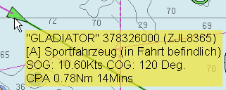
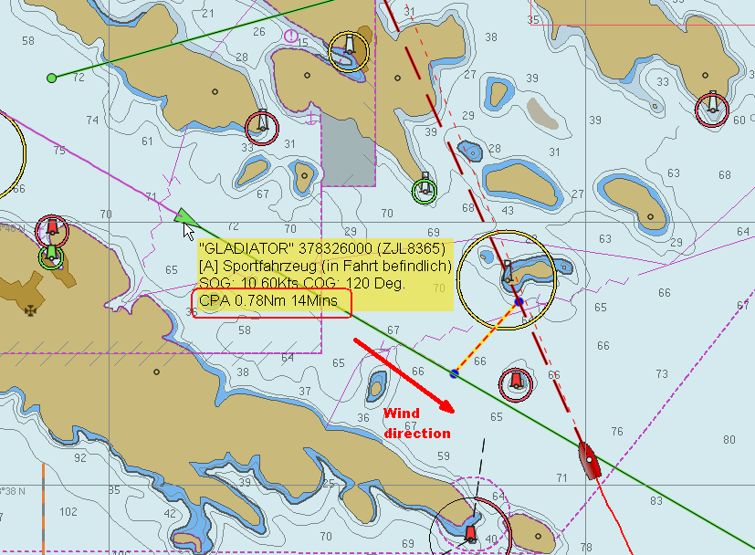
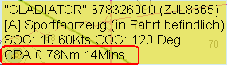
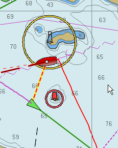
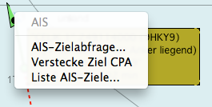
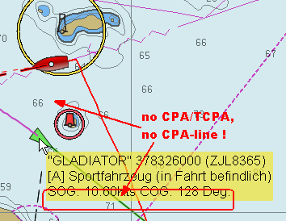
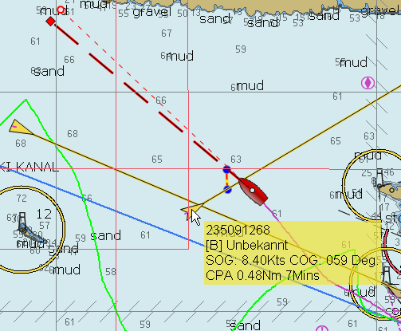
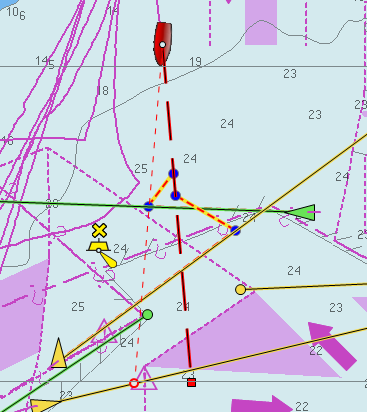

Beispiele über Ziel-CPA
OpenCPN zeigt Warnungen über CPA und TCPA Ziele entsprechend den Einstellungen der Optionen-Lasche von AIS. Es ist aber auch möglich, CPA und TCPA für jedes Ziel zu zeigen,
das keine sofortige Gefahr darstellt, aber wo die interne CPA Berechnung stattfindet, um zur Entscheidungsfindung beizutragen.
Das AIS Popup Fenster zeigt die CPA und TCPA eines Ziels:

Aber dies sagt uns nicht, wo wir und das Ziel bei dem CPA sind und ob das Ziel vor oder hinter uns passiert (sollen wir z.B. beschleunigen oder verlangsamen?).
Siehe folgendes (echtes) Beispiel:
Wir segeln hart am Wind, während sich uns ein Schiff nähert, mehr oder weniger aus der Wind-Richtung. Normalerweise ist eine CPA von 0,78 Meilen sicher, aber da ist diese
Insel auf unserem Weg, womit wir auf das Schiff zuhalten müssen und es sind noch 14 Minuten bis dahin...

Was passiert mit unserem CPA nach der Kursänderung?
Sind wir uns schon begegnet oder kommen wir näher, wenn der Kurs vor der Insel geändert wird?
Die Antwort findet man im kontext-sensitiven Menü für AIS Ziele. Bewegen Sie die Maus über das Ziel und wenn CPA/TCPA-Informationen im Popup-Fenster zu sehen sind,

kann mit einem Rechtsklick auf "Zeige Ziel CPA" geklickt werden.

Diese Funktion ist nur verfügbar, wenn wir einen "gültigen CPA" haben, d.h., wenn das Popup-Fenster CPA und TCPA anzeigt. Es wird die interne CPA Berechnung verwendet. Sie zeigt nur die "CPA Linie", die bei einem CPA Alarm verwendet wird:
Mit der CPA Linie im Bild oben wird das Leben einfacher. Kein Grund zur Sorge also ...
Mit CPA...
Somit sieht es nach unserer Kursänderung so aus:

Um die CPA Linie wieder los zu werden, gibt es jetzt den Menüpunkt "Verstecke Ziel CPA" im Kontextmenü.

Wie schon erwähnt, wird die CPA Linie nur gezeigt, wenn es eine gültige CPA gibt. Eine Minute später gibt es für dies Ziel kein CPA mehr und die CPA Linie ist nicht mehr verfügbar!

Ein weiteres Beispiel:

Der wird hinter uns passieren, somit "Voll voraus" für uns.
Überwachung mehrerer Ziele
Es kann parallel mehr als ein Ziel überwacht werden. Machen Sie einfach einen Rechtsklick auf das zweite Ziel mit "Zeige Ziel CPA".
Die Situation könnte ja sein: Was passiert mit dem zweiten Ziel, wenn das erste Ziel aus dem Weg ist?
